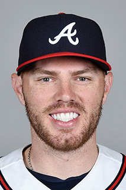

The Atlanta Braves have been in rebuild mode for several years now. From trading away fan favorites, such as Craig Kimbrel, Andrelton Simmons, and Evan Gattis, to not making the playoffs since 2013, the Braves have done their loyal fans no favors. However, becasue the Braves realized that they needed to trade their aging players for a new, young core of talent, this 2018 Braves team will be one of the youngest, most exciting Braves teams in recent memory.
Led by the young and talented core of First Baseman Freddie Freeman, Second Baseman Ozzie Albies, Shortstop Dansby Swanson, and Centerfielder Ender Inciarte, this Braves offense should be potent. Freeman, 28, is the oldest of the bunch, but he is entering is prime and is considered by many one of the best offensive and defensive first basemen in the entire league. As long as he stays healthy, this offense will be dangerous regardless of who else is in the lineup. Luckily for the Braves, other weapons surround him. Inciarte, who finished second in the National League in hits last year while also winning a Gold Glove, is everything you want in a traditional leadoff hitter- he gets on base, has the speed to steal, and is a tremendous defender. At just 21 years old, Ozzie Albies is well ahead of the curve. He will surely go through growing pains this year, but he has a high ceiling. Look for him to have a good year and lead the team in stolen bases. Nick Markakis, the rightfielder, is the veteran of this lineup. He may be 34, but he still brings invaluable on-base skills and much-needed leadership to this young team. At catcher, Tyler Flowers is looking to build off of a career year in which he set career highs in AVG.(batting average), OBP.(On-base percentage), and SLG.(slugging percentage). In left field, newly acquired Preston Tucker will get the chance to prove himself. He has only 434 career at bats, and was out of the league completely last year. The Braves are hoping that he can be a good stopgap until some younger prospects are ready to play. Dansby Swanson, a promising part of the Braves young core, was without a doubt the most dissapointing member of this core last year. This year he must bounce back if he wants to be a part of this team's future. Ryan Flaherty, who the Braves acquired only a week before the season started, will start at third base. He is nothing more than a utility player and will be a liability on offense. In summary, this offense has some young and exciting talent, but there are too many unproven players and question marks to believe that this offense will be anything above average. However, this lineup has the foundations of a lineup that will be dangerous in the future with a little more talent and experience.
The Braves should be a good, although not spectacular, offensive team. The pitching staff is unfortunately much weaker, and as a result the Braves will have a hard time outscoring opponents. Julio Teheran is the "ace" of the pitching staff, but in reality, he is more of a number 3 or 4 starter that is stuck as a number 1 starter because of the lack of established pitching talent on this team. He struggled mightily last year, and the Braves have to hope that he can improve. Mike Foltynewicz is currently the number 2 starter, yet he has the talent to be really good. He struggles with the mental aspect of the game, but if he can overcome these issues he could be the best pitcher on this team. The number 3 starter is newly acquired veteran Brandon McCarthy. He is a decent pitcher when healthy, but he can't ever stay healthy for a full season and is 34 years old. Sean Newcomb is another young player on this roster, and he is penciled in as the number 4 starter. He struggled at times last year, and will no doubt go through some growing pains this year, but he has talent. At closer, Arodys Vizcaino will have the first crack at the job. He had a nice bounce back year last year, but this will be his first full year as a closer, so it'll be interesting to see how he handles it. In conclusion, this pitching staff has very few proven arms and a lot of youth. While having young, talented pitchers is a good thing, they will certainly have to take their lumps, ensuring that this Braves team will give up a lot of runs this year.
I believe that the Braves will go 78-84 this year. This record would be the Braves best record since 2014, and I truly believe that this team is heading in the right direction and that exciting times are ahead. However, Braves fans must be patient. This team is still young, and we will see flashes of potential throughout this season. However, consistency takes time to develop, and I believe this team will lack the consistency to finish with a winning record this year. Watch out for the Braves though, they'll be out to prove something in 2019 and 2020.
| Star Player | Batting Average | HR | RBI |
|---|---|---|---|
| Freddie Freeman | .307 | 28 | 71 |